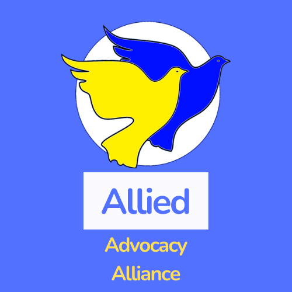

 Allied Advocacy Alliance
Founded in the first quarter of 2020 and based in Stockholm, Sweden, we remained largely inactive until 2022.
The alliance was established through a united effort to advocate for freedom of the press, with a focus on
supporting independent publishing and journalism.
Defining "publishing" and "journalism" is an ongoing challenge amplified at a time where misinformation and
mistruths are increasingly common.
Defining what is established as "independent" is equally challenging as there are many platforms available
which enable anyone to establish publishing operations, literally overnight.
Active participants which make up the alliance understand all aspects of the industry well, particularly that of
independent publishing.
We believe independent publishing is increasingly becoming more critical to a healthy media industry.
It is independent journalism which is often highly influential in shaping the world's news and current affairs.
The alliance offers a professional, united voice which serves as an umbrella body to represent independent
publishers and journalists.
We aim not to take away the power of the independent voice, but strengthen it through unity.
Contact us by email at aaa_se@outlook.com